3 二维渲染器
| (require plot) | package: plot-gui-lib |
3.1 二维渲染器函数参数
代表要绘制的图形的必要(也可能是可选)参数。
可选的关键字参数,用于覆盖计算的边界,默认值为 #f。
可选的关键字参数,决定了绘图的外观。
可选的关键字参数 #:label, 指定图例中的渲染器的名称。
我们将以 function, 也许是最常用的产生渲染器的函数为例。
图例参数。 function 的第一个参数是必要的 f, 即要绘制的函数。 接下来是两个可选的参数 x-min 和 x-max, 它们指定了渲染器的 x 边界。 (如果没有给出,那么 x 边界将是绘图区域的 x 边界,这是由另一个渲染器要求的, 或者用 #:x-min 和 #:x-max 来指定 plot 。)
这三个参数定义了函数 f 的 graph , 一个可能是无限的点对 x,(f x) 的集合。 一个无限大的图形不能直接绘制,所以渲染器必须对其中的点进行近似绘制。 由 function 返回的渲染器通过绘制端对端连接的线条来实现这一点。
重写边界参数。 在 function 的参数列表中, 接下来是关键字参数 #:y-min 和 #:y-max, 如果给出的话, 这两个参数会覆盖渲染器计算出的 y 边界。
外观参数。 下一个关键字参数是 #:samples, 它决定了渲染器的近似图的质量(越高越好)。 在 #:samples 之后是 #:color, #:width, #:style 和 #:alpha, 它们决定了构成绘图的线条的颜色、宽度、样式和不透明度。
一般来说,决定绘图外观的关键字参数遵循一致的命名惯例。 最常见的关键字是 #:color (用于填充和线条颜色), #:width (用于线条宽度), #:style(用于填充和线条样式)和 #:alpha 。 当一个函数需要填充色和线条色时,填充色用 #:color 给出, 线条色用 #:line-color 给出(或一些变化,如 #:line1-color)。 样式也遵循同样的规则。
每个外观关键字参数都默认为一个参数的值。 这使得整个系列的绘图都可以用很少的工作来改变。 例如,设置 (line-color 3) 会使每个后续的绘制连接线的渲染器都用蓝色绘制线条。
标签参数。 最后,还有 #:label 。 如果给定的话,function 渲染器将生成一个标签条目, plot 将其放入图例中。 标签参数可以是一个字符串或一个 pict 。 对于大多数使用情况,字符串就足够了,特别是它允许使用 Unicode 字符,以及一些数学符号。 对于更复杂的情况,可以使用 pict ,它允许使用任意的文本和图形作为标签条目。
Changed in version 7.9 of package plot-gui-lib: 为 #:label 增加了对图片的支持
并非每个产生渲染器的函数都有 #:label 参数;例如, error-bars 。
3.2 二维点渲染器
procedure
(points vs [ #:x-min x-min #:x-max x-max #:y-min y-min #:y-max y-max #:sym sym #:color color #:fill-color fill-color #:x-jitter x-jitter #:y-jitter y-jitter #:size size #:line-width line-width #:alpha alpha #:label label]) → renderer2d? vs : (sequence/c (sequence/c #:min-count 2 real?)) x-min : (or/c rational? #f) = #f x-max : (or/c rational? #f) = #f y-min : (or/c rational? #f) = #f y-max : (or/c rational? #f) = #f sym : point-sym/c = (point-sym) color : plot-color/c = (point-color) fill-color : (or/c plot-color/c 'auto) = 'auto x-jitter : (>=/c 0) = (point-x-jitter) y-jitter : (>=/c 0) = (point-y-jitter) size : (>=/c 0) = (point-size) line-width : (>=/c 0) = (point-line-width) alpha : (real-in 0 1) = (point-alpha) label : (or/c string? pict? #f) = #f
> (parameterize ([plot-width 150] [plot-height 150] [plot-x-label #f] [plot-y-label #f]) (define xs (build-list 20 (λ _ (random)))) (define ys (build-list 20 (λ _ (random)))) (list (plot (points (map vector xs ys))) (plot (points (map vector xs ys) #:x-min 0 #:x-max 1 #:y-min 0 #:y-max 1)))) '(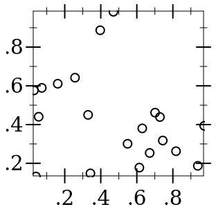 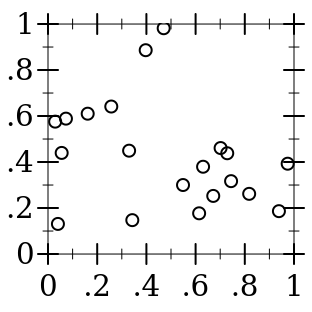)
#:sym 参数可以是任何整数、Unicode 字符或字符串,或者 known-point-symbols 中的一个符号。 当你需要不同的点但不关心它们到底是什么时,使用整数。
当 x-jitter 非零时,所有的点都会从它们沿x轴的原始位置被随机翻译成最多 x-jitter 的量。 非零的 y-jitter 同样会将点沿 y 轴平移。 抖动在两个方向上都被加上,所以总的传播是给定值的两倍。 准确地说,每个点 p 被移动到以 p 为中心的矩形内的随机位置, 其宽度最多为 x-jitter 的两倍,高度最多为 y-jitter 的两倍, 如果这些界限是非 #f, 则新点位于 [x-min, x-max] 和 [y-min, y-max] 内。
> (plot (points (for/list ([i (in-range 1000)]) (list 0 0)) #:alpha 0.4 #:x-jitter 1 #:y-jitter 1 #:sym 'fullcircle1 #:color "blue") #:x-min -2 #:x-max 2 #:y-min -2 #:y-max 2) 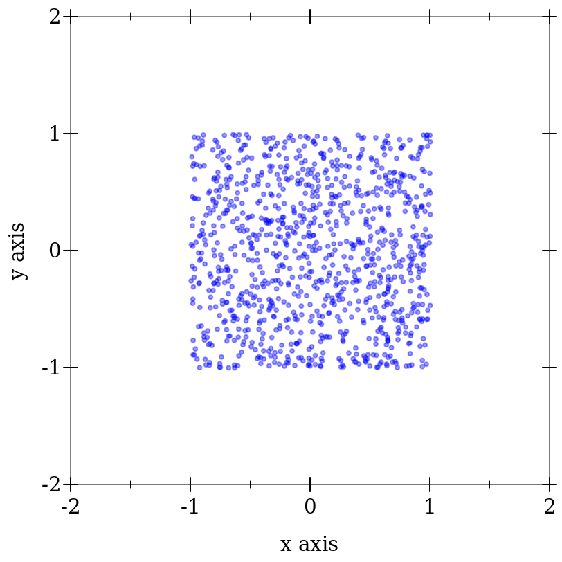
为了突出密集(或 overplotted) 样本的大小。
查看一维数据的分布;作为箱形图或小提琴图的替代。
对空间数据进行匿名化处理,如显示一个办公室的邻居,但隐藏其地址。
Changed in version 7.9 of package plot-gui-lib: 为#:label增加了对图片的支持
procedure
(vector-field f [ x-min x-max y-min y-max #:samples samples #:scale scale #:color color #:line-width line-width #:line-style line-style #:alpha alpha #:label label]) → renderer2d?
f :
(or/c (-> real? real? (sequence/c real?)) (-> (vector/c real? real?) (sequence/c real?))) x-min : (or/c rational? #f) = #f x-max : (or/c rational? #f) = #f y-min : (or/c rational? #f) = #f y-max : (or/c rational? #f) = #f samples : exact-positive-integer? = (vector-field-samples)
scale : (or/c real? (one-of/c 'auto 'normalized)) = (vector-field-scale) color : plot-color/c = (vector-field-color) line-width : (>=/c 0) = (vector-field-line-width) line-style : plot-pen-style/c = (vector-field-line-style) alpha : (real-in 0 1) = (vector-field-alpha) label : (or/c string? pict? #f) = #f
如果 scale 是一个实数,箭头的长度就乘以 scale 。 如果 'auto, 比例的计算方式是使箭头不会重叠。 如果 'normalized, 每个箭头被做成相同的长度: 'auto 所允许的最大长度。
箭头的形状可以用 arrow-head-size-or-scale 和 arrow-head-angle 来控制。
Changed in version 7.9 of package plot-gui-lib: 增加了对 #:label 和控制箭头的图片的支持
procedure
(error-bars bars [ #:x-min x-min #:x-max x-max #:y-min y-min #:y-max y-max #:color color #:line-width line-width #:line-style line-style #:width width #:alpha alpha #:invert? invert?]) → renderer2d? bars : (sequence/c (sequence/c #:min-count 3 real?)) x-min : (or/c rational? #f) = #f x-max : (or/c rational? #f) = #f y-min : (or/c rational? #f) = #f y-max : (or/c rational? #f) = #f color : plot-color/c = (error-bar-color) line-width : (>=/c 0) = (error-bar-line-width) line-style : plot-pen-style/c = (error-bar-line-style) width : (>=/c 0) = (error-bar-width) alpha : (real-in 0 1) = (error-bar-alpha) invert? : boolean? = #f
> (plot (list (function sqr 1 7) (error-bars (list (vector 2 4 12) (vector 4 16 20) (vector 6 36 10))))) 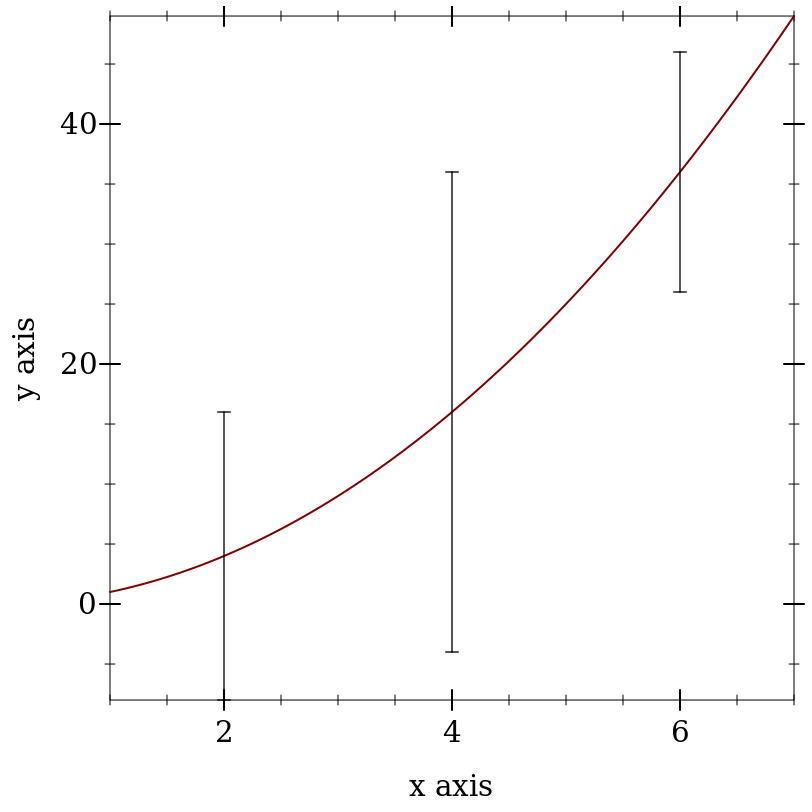
如果 invert? 是 #t, 那么 x 和 y 坐标将被倒置,并且条形图是水平绘制的,而不是垂直的。 这是为了与 discrete-histogram 和 stacked-histogram 的相应选项一起使用。
Changed in version 1.1 of package plot-gui-lib: 增加了 #:invert? 选项。
procedure
(candlesticks candles [ #:x-min x-min #:x-max x-max #:y-min y-min #:y-max y-max #:up-color up-color #:down-color down-color #:line-width line-width #:line-style line-style #:width width #:alpha alpha]) → renderer2d? candles : (sequence/c (sequence/c #:min-count 5 real?)) x-min : (or/c rational? #f) = #f x-max : (or/c rational? #f) = #f y-min : (or/c rational? #f) = #f y-max : (or/c rational? #f) = #f up-color : plot-color/c = (candlestick-up-color) down-color : plot-color/c = (candlestick-down-color) line-width : (>=/c 0) = (candlestick-line-width) line-style : plot-pen-style/c = (candlestick-line-style) width : (>=/c 0) = (candlestick-width) alpha : (real-in 0 1) = (candlestick-alpha)
> (plot (list (candlesticks (list (vector 2 4 12 4 8) (vector 4 16 20 8 12) (vector 6 24 36 10 24))))) 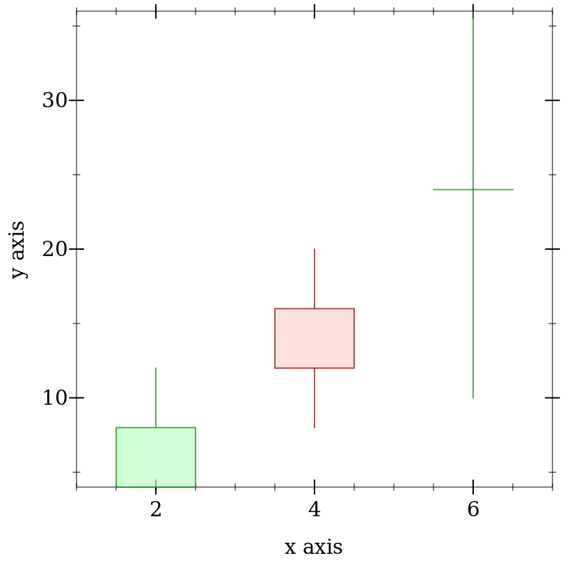
procedure
(color-field f [ x-min x-max y-min y-max #:samples samples #:alpha alpha]) → renderer2d?
f :
(or/c (-> real? real? plot-color/c) (-> (vector/c real? real?) plot-color/c)) x-min : (or/c rational? #f) = #f x-max : (or/c rational? #f) = #f y-min : (or/c rational? #f) = #f y-max : (or/c rational? #f) = #f samples : exact-positive-integer? = (color-field-samples) alpha : (real-in 0 1) = (color-field-alpha)

Added in version 7.9 of package plot-gui-lib.
3.3 二维线条渲染器
procedure
(function f [ x-min x-max #:y-min y-min #:y-max y-max #:samples samples #:color color #:width width #:style style #:alpha alpha #:marker marker #:marker-color marker-color #:marker-fill-color marker-fill-color #:marker-size marker-size #:marker-line-width marker-line-width #:marker-alpha marker-alpha #:marker-count marker-count #:label label]) → renderer2d? f : (real? . -> . real?) x-min : (or/c rational? #f) = #f x-max : (or/c rational? #f) = #f y-min : (or/c rational? #f) = #f y-max : (or/c rational? #f) = #f samples : (and/c exact-integer? (>=/c 2)) = (line-samples) color : plot-color/c = (line-color) width : (>=/c 0) = (line-width) style : plot-pen-style/c = (line-style) alpha : (real-in 0 1) = (line-alpha) marker : point-sym/c = 'none marker-color : (or/c 'auto plot-color/c) = 'auto marker-fill-color : (or/c 'auto plot-color/c) = 'auto marker-size : (>=/c 0) = (point-size) marker-line-width : (>=/c 0) = (point-line-width) marker-alpha : (real-in 0 1) = (point-alpha) marker-count : positive-integer? = 20 label : (or/c string? pict? #f) = #f
> (plot (function sqr -2 2)) 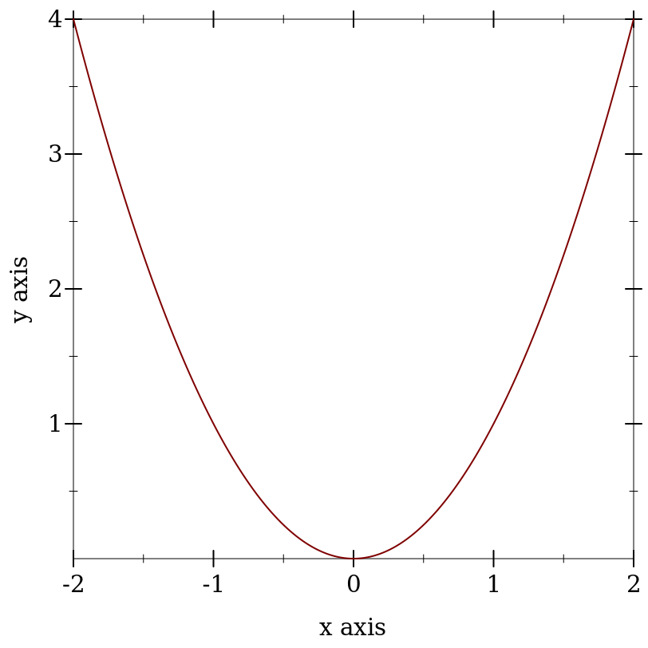
当 marker 不是 'none 时,标记将以相等的间隔放置在为该函数绘制的线上。 标记和相关参数与 points 渲染器的参数相同。 绘图上显示的标记的数量由 marker-count 参数指定。
使用标记的效果与在一个图中同时使用 function 和 points 渲染器的效果相同, 只是使用 marker 会在图例中的线条样式上叠加显示标记。
Changed in version 7.9 of package plot-gui-lib: #:label 参数支持图片
Changed in version 8.10 of package plot-gui-lib: #:marker 和相关参数添加
procedure
(inverse f [ y-min y-max #:x-min x-min #:x-max x-max #:samples samples #:color color #:width width #:style style #:alpha alpha #:marker marker #:marker-color marker-color #:marker-fill-color marker-fill-color #:marker-size marker-size #:marker-line-width marker-line-width #:marker-alpha marker-alpha #:marker-count marker-count #:label label]) → renderer2d? f : (real? . -> . real?) y-min : (or/c rational? #f) = #f y-max : (or/c rational? #f) = #f x-min : (or/c rational? #f) = #f x-max : (or/c rational? #f) = #f samples : (and/c exact-integer? (>=/c 2)) = (line-samples) color : plot-color/c = (line-color) width : (>=/c 0) = (line-width) style : plot-pen-style/c = (line-style) alpha : (real-in 0 1) = (line-alpha) marker : point-sym/c = 'none marker-color : (or/c 'auto plot-color/c) = 'auto marker-fill-color : (or/c 'auto plot-color/c) = 'auto marker-size : (>=/c 0) = (point-size) marker-line-width : (>=/c 0) = (point-line-width) marker-alpha : (real-in 0 1) = (point-alpha) marker-count : positive-integer? = 20 label : (or/c string? pict? #f) = #f
> (plot (list (axes) (function sqr -2 2 #:label "y = x²") (function (λ (x) x) #:color 0 #:style 'dot #:label "y = x") (inverse sqr -2 2 #:color 3 #:label "x = y²"))) 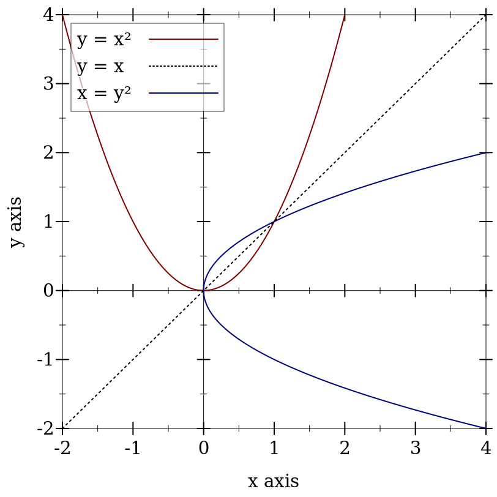
marker 和相关参数的含义与 function 渲染器相同。
Changed in version 7.9 of package plot-gui-lib: #:label 参数支持图片
Changed in version 8.10 of package plot-gui-lib: #:marker 和相关参数已添加
procedure
(lines vs [ #:x-min x-min #:x-max x-max #:y-min y-min #:y-max y-max #:color color #:width width #:style style #:alpha alpha #:marker marker #:marker-color marker-color #:marker-fill-color marker-fill-color #:marker-size marker-size #:marker-line-width marker-line-width #:marker-alpha marker-alpha #:label label #:ignore-axis-transforms? ignore-axis-transforms?]) → renderer2d? vs : (sequence/c (sequence/c #:min-count 2 real?)) x-min : (or/c rational? #f) = #f x-max : (or/c rational? #f) = #f y-min : (or/c rational? #f) = #f y-max : (or/c rational? #f) = #f color : plot-color/c = (line-color) width : (>=/c 0) = (line-width) style : plot-pen-style/c = (line-style) alpha : (real-in 0 1) = (line-alpha) marker : point-sym/c = 'none marker-color : (or/c 'auto plot-color/c) = 'auto marker-fill-color : (or/c 'auto plot-color/c) = 'auto marker-size : (>=/c 0) = (point-size) marker-line-width : (>=/c 0) = (point-line-width) marker-alpha : (real-in 0 1) = (point-alpha) label : (or/c string? pict? #f) = #f ignore-axis-transforms? : boolean? = #f
这对于绘制时间序列,比如随机漫步,是直接有用的:
> (plot (lines (reverse (for/fold ([lst (list (vector 0 0))]) ([i (in-range 1 200)]) (match-define (vector x y) (first lst)) (cons (vector i (+ y (* 1/100 (- (random) 1/2)))) lst))) #:color 6 #:label "Random walk")) 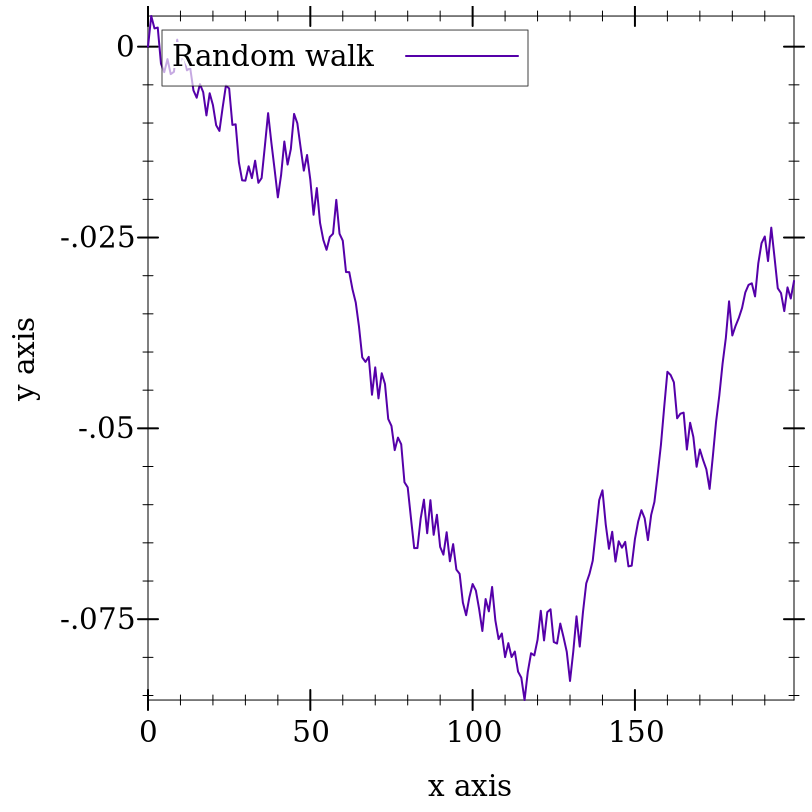
如果 vs 中的任何一个点是 +nan.0, 则不会在该位置画出线段。 这可以用来用一个 lines 渲染器绘制多个独立的数据集,提高大数据集的渲染性能。
当 marker 不是 'none 时,标记将被放置在 在 vs 中的每一个点的线上。 标记和相关参数 与 points 渲染器相同。
使用标记的效果与在一个图中同时使用 lines 和 points 渲染器的效果相同, 只是使用 marker 会在图例中显示标记叠加在线条样式上。
当 ignore-axis-transforms? 为 #t 时, 只有 vs 中的单个点会受到轴变换的影响,而不是连接这些点的线。 例如,这个特性可以用来在对数图上绘制收敛线。
注意: 在绘图中忽略轴变换是不可取的,但这个特性可以用来复制其他绘图库的功能, 它是为熟悉这些库的用户准备的。 在 Racket 中,最好使用 function 渲染器在对数图上显示收敛线,其幂函数基于斜率和截距。
> (let ([data '((5 1.24) (203 510))] [slope 1.6252] [intercept -2.4005]) (parameterize ([plot-x-transform log-transform] [plot-y-transform log-transform]) (plot (list (tick-grid) (lines data #:ignore-axis-transforms? #f #:label "ignore-axis-transforms? #f" #:color 1) (lines data #:ignore-axis-transforms? #t #:label "ignore-axis-transforms? #t" #:color 2) (function (lambda (x) (* (exp intercept)) (expt x slope)) #:style 'long-dash #:label "convergence line" #:color 3))))) 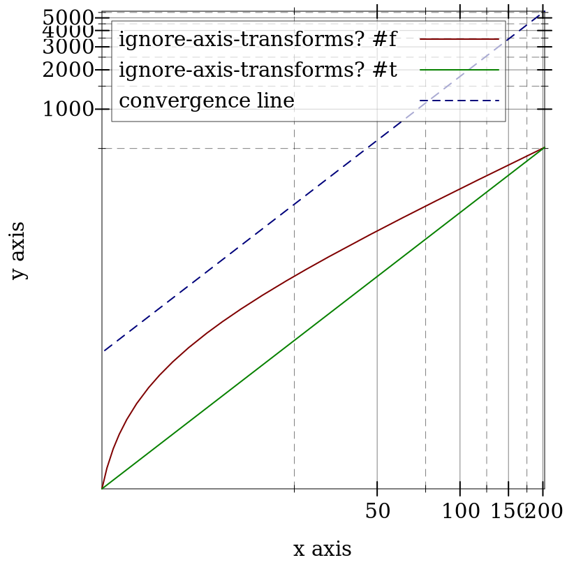
Changed in version 7.9 of package plot-gui-lib: #:label 参数支持图片
Changed in version 8.9 of package plot-gui-lib: # :ignore-axis-transforms? 参数已添加
Changed in version 8.10 of package plot-gui-lib: 添加 #:marker 和相关参数
procedure
(parametric f t-min t-max [ #:x-min x-min #:x-max x-max #:y-min y-min #:y-max y-max #:samples samples #:color color #:width width #:style style #:alpha alpha #:label label]) → renderer2d? f : (real? . -> . (sequence/c real?)) t-min : rational? t-max : rational? x-min : (or/c rational? #f) = #f x-max : (or/c rational? #f) = #f y-min : (or/c rational? #f) = #f y-max : (or/c rational? #f) = #f samples : (and/c exact-integer? (>=/c 2)) = (line-samples) color : plot-color/c = (line-color) width : (>=/c 0) = (line-width) style : plot-pen-style/c = (line-style) alpha : (real-in 0 1) = (line-alpha) label : (or/c string? pict? #f) = #f
Changed in version 7.9 of package plot-gui-lib: 为 #:label 添加了对图片的支持
procedure
(polar f [ θ-min θ-max #:x-min x-min #:x-max x-max #:y-min y-min #:y-max y-max #:samples samples #:color color #:width width #:style style #:alpha alpha #:label label]) → renderer2d? f : (real? . -> . real?) θ-min : real? = 0 θ-max : real? = (* 2 pi) x-min : (or/c rational? #f) = #f x-max : (or/c rational? #f) = #f y-min : (or/c rational? #f) = #f y-max : (or/c rational? #f) = #f samples : (and/c exact-integer? (>=/c 2)) = (line-samples) color : plot-color/c = (line-color) width : (>=/c 0) = (line-width) style : plot-pen-style/c = (line-style) alpha : (real-in 0 1) = (line-alpha) label : (or/c string? pict? #f) = #f

Changed in version 7.9 of package plot-gui-lib: 为 #:label 添加了对图片的支持
procedure
(density xs [ bw-adjust ws #:x-min x-min #:x-max x-max #:y-min y-min #:y-max y-max #:samples samples #:color color #:width width #:style style #:alpha alpha #:label label]) → renderer2d? xs : (sequence/c real?) bw-adjust : (>/c 0) = 1 ws : (or/c (sequence/c (>=/c 0)) #f) = #f x-min : (or/c rational? #f) = #f x-max : (or/c rational? #f) = #f y-min : (or/c rational? #f) = #f y-max : (or/c rational? #f) = #f samples : (and/c exact-integer? (>=/c 2)) = (line-samples) color : plot-color/c = (line-color) width : (>=/c 0) = (line-width) style : plot-pen-style/c = (line-style) alpha : (real-in 0 1) = (line-alpha) label : (or/c string? pict? #f) = #f
> (plot (list (function (λ (x) (cond [(or (x . < . -1) (x . > . 1)) 0] [(x . < . 0) (+ 1 x)] [(x . >= . 0) (- 1 x)])) -1.5 1.5 #:label "Density") (density (build-list 2000 (λ (n) (- (+ (random) (random)) 1))) #:color 0 #:width 2 #:style 'dot #:label "Est. density"))) 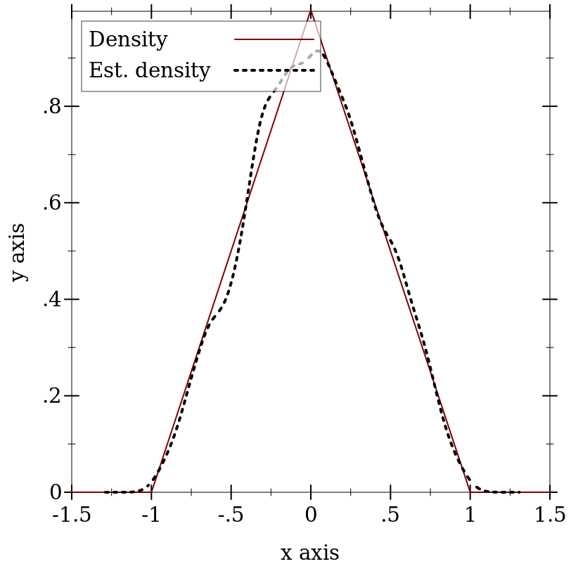
Changed in version 7.9 of package plot-gui-lib: 为 #:label 增加了对图片的支持
procedure
(arrows vs [ #:x-min x-min #:x-max x-max #:y-min y-min #:y-max y-max #:color color #:width width #:style style #:alpha alpha #:arrow-head-size-or-scale size #:arrow-head-angle angle #:label label]) → renderer2d?
vs :
(or/c (listof (sequence/c #:min-count 2 real?)) (vectorof (vector/c (sequence/c #:min-count 2 real?) (sequence/c #:min-count 2 real?)))) x-min : (or/c rational? #f) = #f x-max : (or/c rational? #f) = #f y-min : (or/c rational? #f) = #f y-max : (or/c rational? #f) = #f color : plot-color/c = (arrows-color) width : (>=/c 0) = (arrows-line-width) style : plot-pen-style/c = (arrows-line-style) alpha : (real-in 0 1) = (arrows-alpha)
size : (or/c (list/c '= (>=/c 0)) (>=/c 0)) = (arrow-head-size-or-scale) angle : (>=/c 0) = (arrow-head-angle) label : (or/c string? pict? #f) = #f
> (plot (list (arrows `((0 0) (2 1) (3 3) (0 0)) #:arrow-head-size-or-scale '(= 20) #:arrow-head-angle 0.2 #:color 6 #:label "a+b+c=0") (arrows `(((2 0) (0 1)) ((3 0) (-1 1))) #:arrow-head-size-or-scale 0.2 #:color 2 #:label "d"))) 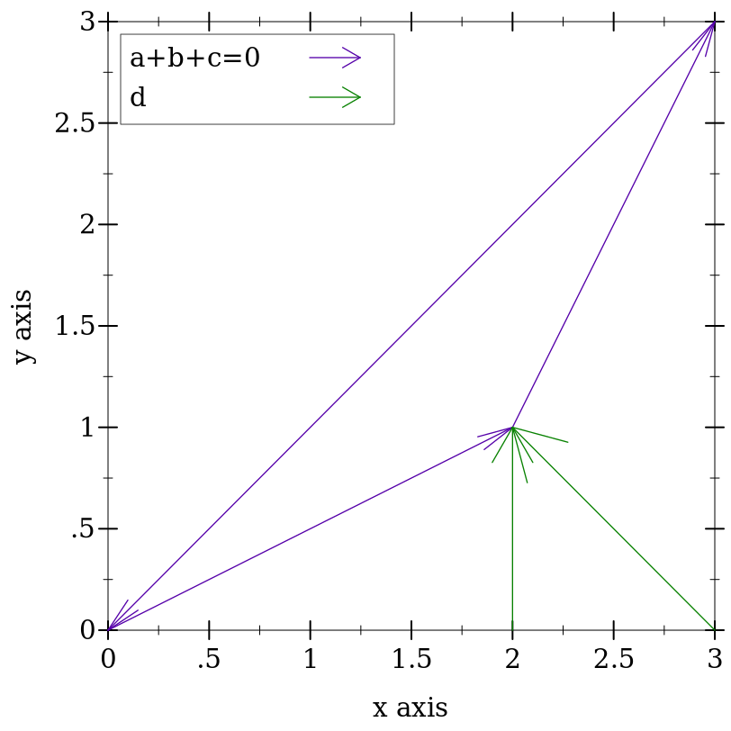
Added in version 7.9 of package plot-gui-lib.
procedure
(hrule y [ x-min x-max #:color color #:width width #:style style #:alpha alpha #:label label]) → renderer2d? y : real? x-min : (or/c rational? #f) = #f x-max : (or/c rational? #f) = #f color : plot-color/c = (line-color) width : (>=/c 0) = (line-width) style : plot-pen-style/c = (line-style) alpha : (real-in 0 1) = (line-alpha) label : (or/c string? pict? #f) = #f
Changed in version 7.9 of package plot-gui-lib: 增加了对 #:label 的图片支持
procedure
(vrule x [ y-min y-max #:color color #:width width #:style style #:alpha alpha #:label label]) → renderer2d? x : real? y-min : (or/c rational? #f) = #f y-max : (or/c rational? #f) = #f color : plot-color/c = (line-color) width : (>=/c 0) = (line-width) style : plot-pen-style/c = (line-style) alpha : (real-in 0 1) = (line-alpha) label : (or/c string? pict? #f) = #f
Changed in version 7.9 of package plot-gui-lib: 为 #:label 添加了对图片的支持
3.4 二维区间渲染器
这些渲染器分别对应于一个线型渲染器,并绘制两条线之间的区域。
procedure
(function-interval f1 f2 [ x-min x-max #:y-min y-min #:y-max y-max #:samples samples #:color color #:style style #:line1-color line1-color #:line1-width line1-width #:line1-style line1-style #:line2-color line2-color #:line2-width line2-width #:line2-style line2-style #:alpha alpha #:label label]) → renderer2d? f1 : (real? . -> . real?) f2 : (real? . -> . real?) x-min : (or/c rational? #f) = #f x-max : (or/c rational? #f) = #f y-min : (or/c rational? #f) = #f y-max : (or/c rational? #f) = #f samples : (and/c exact-integer? (>=/c 2)) = (line-samples) color : plot-color/c = (interval-color) style : plot-brush-style/c = (interval-style) line1-color : plot-color/c = (interval-line1-color) line1-width : (>=/c 0) = (interval-line1-width) line1-style : plot-pen-style/c = (interval-line1-style) line2-color : plot-color/c = (interval-line2-color) line2-width : (>=/c 0) = (interval-line2-width) line2-style : plot-pen-style/c = (interval-line2-style) alpha : (real-in 0 1) = (interval-alpha) label : (or/c string? pict? #f) = #f
> (plot (function-interval (λ (x) 0) (λ (x) (exp (* -1/2 (sqr x)))) -4 4 #:line1-style 'transparent)) 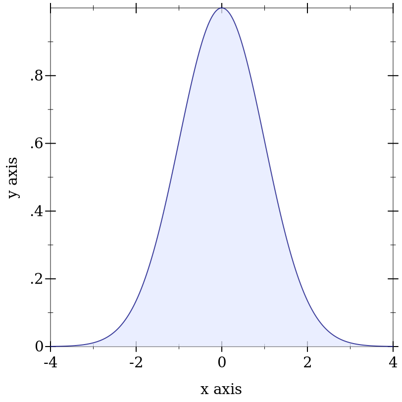
Changed in version 7.9 of package plot-gui-lib: 增加了对 #:label 图片的支持
procedure
(inverse-interval f1 f2 [ y-min y-max #:x-min x-min #:x-max x-max #:samples samples #:color color #:style style #:line1-color line1-color #:line1-width line1-width #:line1-style line1-style #:line2-color line2-color #:line2-width line2-width #:line2-style line2-style #:alpha alpha #:label label]) → renderer2d? f1 : (real? . -> . real?) f2 : (real? . -> . real?) y-min : (or/c rational? #f) = #f y-max : (or/c rational? #f) = #f x-min : (or/c rational? #f) = #f x-max : (or/c rational? #f) = #f samples : (and/c exact-integer? (>=/c 2)) = (line-samples) color : plot-color/c = (interval-color) style : plot-brush-style/c = (interval-style) line1-color : plot-color/c = (interval-line1-color) line1-width : (>=/c 0) = (interval-line1-width) line1-style : plot-pen-style/c = (interval-line1-style) line2-color : plot-color/c = (interval-line2-color) line2-width : (>=/c 0) = (interval-line2-width) line2-style : plot-pen-style/c = (interval-line2-style) alpha : (real-in 0 1) = (interval-alpha) label : (or/c string? pict? #f) = #f
> (plot (inverse-interval sin (λ (x) 0) (- pi) pi #:line2-style 'long-dash)) 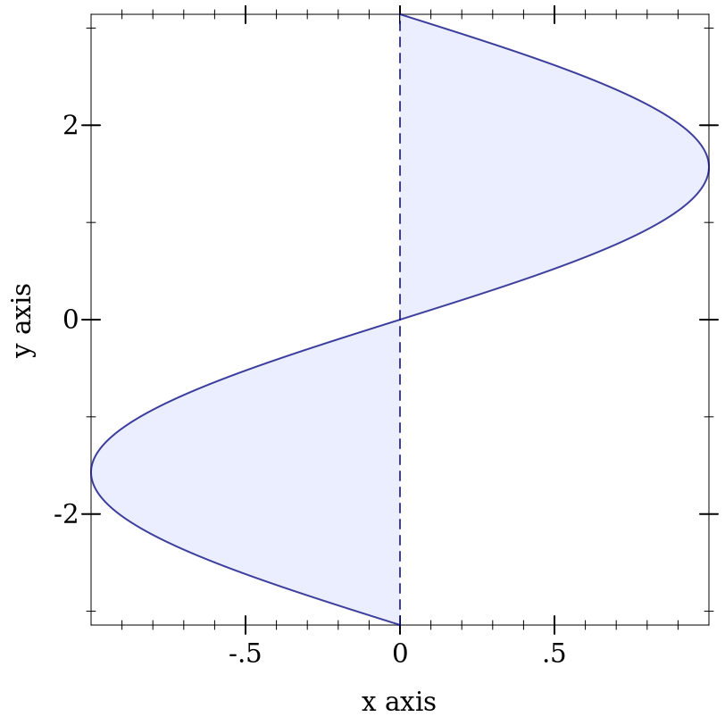
Changed in version 7.9 of package plot-gui-lib: 增加了对 #:label 图片的支持
procedure
(lines-interval v1s v2s [ #:x-min x-min #:x-max x-max #:y-min y-min #:y-max y-max #:color color #:style style #:line1-color line1-color #:line1-width line1-width #:line1-style line1-style #:line2-color line2-color #:line2-width line2-width #:line2-style line2-style #:alpha alpha #:label label]) → renderer2d? v1s : (sequence/c (sequence/c #:min-count 2 real?)) v2s : (sequence/c (sequence/c #:min-count 2 real?)) x-min : (or/c rational? #f) = #f x-max : (or/c rational? #f) = #f y-min : (or/c rational? #f) = #f y-max : (or/c rational? #f) = #f color : plot-color/c = (interval-color) style : plot-brush-style/c = (interval-style) line1-color : plot-color/c = (interval-line1-color) line1-width : (>=/c 0) = (interval-line1-width) line1-style : plot-pen-style/c = (interval-line1-style) line2-color : plot-color/c = (interval-line2-color) line2-width : (>=/c 0) = (interval-line2-width) line2-style : plot-pen-style/c = (interval-line2-style) alpha : (real-in 0 1) = (interval-alpha) label : (or/c string? pict? #f) = #f
> (plot (list (tick-grid) (lines-interval (list #(0 0) #(1 1/2)) (list #(0 1) #(1 3/2)) #:color 4 #:line1-color 4 #:line2-color 4 #:label "Parallelogram"))) 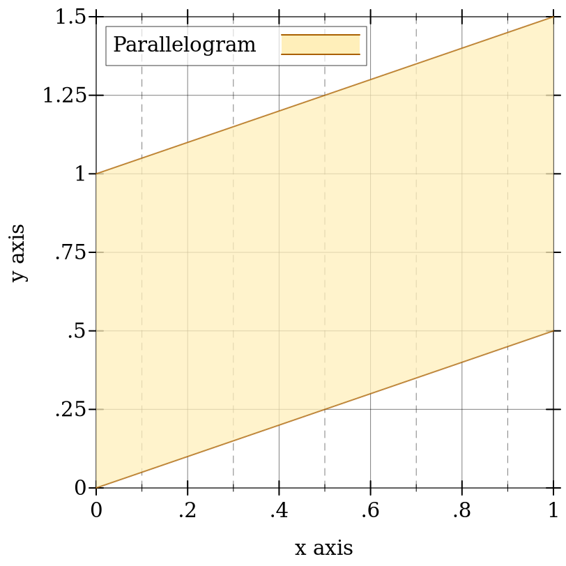
Changed in version 7.9 of package plot-gui-lib: 增加了对 #:label 图片的支持
procedure
(parametric-interval f1 f2 t-min t-max [ #:x-min x-min #:x-max x-max #:y-min y-min #:y-max y-max #:samples samples #:color color #:style style #:line1-color line1-color #:line1-width line1-width #:line1-style line1-style #:line2-color line2-color #:line2-width line2-width #:line2-style line2-style #:alpha alpha #:label label]) → renderer2d? f1 : (real? . -> . (sequence/c real?)) f2 : (real? . -> . (sequence/c real?)) t-min : rational? t-max : rational? x-min : (or/c rational? #f) = #f x-max : (or/c rational? #f) = #f y-min : (or/c rational? #f) = #f y-max : (or/c rational? #f) = #f samples : (and/c exact-integer? (>=/c 2)) = (line-samples) color : plot-color/c = (interval-color) style : plot-brush-style/c = (interval-style) line1-color : plot-color/c = (interval-line1-color) line1-width : (>=/c 0) = (interval-line1-width) line1-style : plot-pen-style/c = (interval-line1-style) line2-color : plot-color/c = (interval-line2-color) line2-width : (>=/c 0) = (interval-line2-width) line2-style : plot-pen-style/c = (interval-line2-style) alpha : (real-in 0 1) = (interval-alpha) label : (or/c string? pict? #f) = #f
> (define (f1 t) (vector (* 2 (cos (* 4/5 t))) (* 2 (sin (* 4/5 t)))))
> (define (f2 t) (vector (* 1/2 (cos t)) (* 1/2 (sin t)))) > (plot (parametric-interval f1 f2 (- pi) pi)) 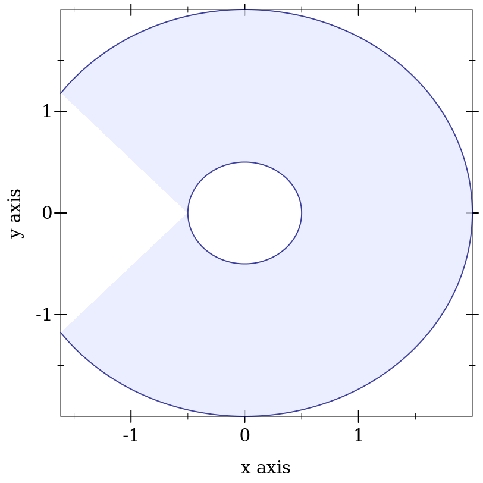
Changed in version 7.9 of package plot-gui-lib: 为 #:label 添加了对图片的支持
procedure
(polar-interval f1 f2 [ θ-min θ-max #:x-min x-min #:x-max x-max #:y-min y-min #:y-max y-max #:samples samples #:color color #:style style #:line1-color line1-color #:line1-width line1-width #:line1-style line1-style #:line2-color line2-color #:line2-width line2-width #:line2-style line2-style #:alpha alpha #:label label]) → renderer2d? f1 : (real? . -> . real?) f2 : (real? . -> . real?) θ-min : rational? = 0 θ-max : rational? = (* 2 pi) x-min : (or/c rational? #f) = #f x-max : (or/c rational? #f) = #f y-min : (or/c rational? #f) = #f y-max : (or/c rational? #f) = #f samples : (and/c exact-integer? (>=/c 2)) = (line-samples) color : plot-color/c = (interval-color) style : plot-brush-style/c = (interval-style) line1-color : plot-color/c = (interval-line1-color) line1-width : (>=/c 0) = (interval-line1-width) line1-style : plot-pen-style/c = (interval-line1-style) line2-color : plot-color/c = (interval-line2-color) line2-width : (>=/c 0) = (interval-line2-width) line2-style : plot-pen-style/c = (interval-line2-style) alpha : (real-in 0 1) = (interval-alpha) label : (or/c string? pict? #f) = #f
> (define (f1 θ) (+ 1/2 (* 1/6 (cos (* 5 θ))))) > (define (f2 θ) (+ 1 (* 1/4 (cos (* 10 θ)))))
> (plot (list (polar-axes #:number 10) (polar-interval f1 f2 #:label "[f1,f2]"))) 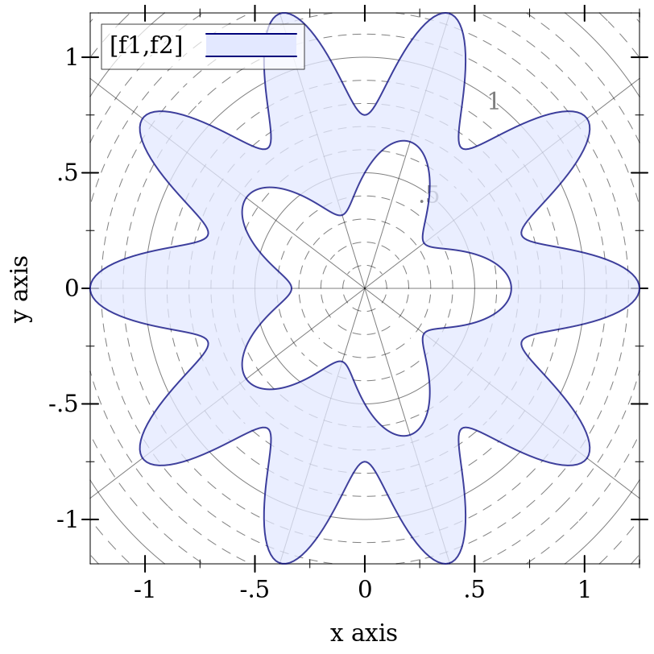
Changed in version 7.9 of package plot-gui-lib: 增加了对 #:label 图片的支持
3.5 二维等高线(Isoline)渲染器
procedure
(isoline f z [ x-min x-max y-min y-max #:samples samples #:color color #:width width #:style style #:alpha alpha #:label label]) → renderer2d? f : (real? real? . -> . real?) z : real? x-min : (or/c rational? #f) = #f x-max : (or/c rational? #f) = #f y-min : (or/c rational? #f) = #f y-max : (or/c rational? #f) = #f samples : (and/c exact-integer? (>=/c 2)) = (contour-samples) color : plot-color/c = (line-color) width : (>=/c 0) = (line-width) style : plot-pen-style/c = (line-style) alpha : (real-in 0 1) = (line-alpha) label : (or/c string? pict? #f) = #f
Changed in version 7.9 of package plot-gui-lib: 为 #:label 添加了对图片的支持
这个函数本来会被命名为 contour, 只是这个名字已经被一个废弃的函数所使用。 它将来可能会被重新命名,用 isoline 作为别名。
procedure
(contours f [ x-min x-max y-min y-max #:samples samples #:levels levels #:colors colors #:widths widths #:styles styles #:alphas alphas #:label label]) → renderer2d? f : (real? real? . -> . real?) x-min : (or/c rational? #f) = #f x-max : (or/c rational? #f) = #f y-min : (or/c rational? #f) = #f y-max : (or/c rational? #f) = #f samples : (and/c exact-integer? (>=/c 2)) = (contour-samples)
levels : (or/c 'auto exact-positive-integer? (listof real?)) = (contour-levels) colors : (plot-colors/c (listof real?)) = (contour-colors) widths : (pen-widths/c (listof real?)) = (contour-widths) styles : (plot-pen-styles/c (listof real?)) = (contour-styles) alphas : (alphas/c (listof real?)) = (contour-alphas) label : (or/c string? pict? #f) = #f
当 levels 为 'auto 时,等高线的数量和它们的值的选择与坐标轴刻度线的位置相同;也就是说,它们被选择为简单的。 当 levels 是一个数字时, contours 在 f 的输出范围内选择该数量的值,均匀间隔排列。 当 levels 是一个列表时, contours 在 levels 中的值上绘制轮廓。

外观关键字参数为 to each contour line 指定了颜色、宽度、样式和不透明度。 每个参数都可以以列表的形式给出,或者以函数的形式从 f 的输出值列表到外观值列表。 在这两种情况下,当轮廓线比列表元素多时,列表中的颜色、宽度、样式和不透明度都会重复。
> (plot (contours (λ (x y) (- (sqr x) (sqr y))) -2 2 -2 2 #:levels 4 #:colors '("blue" "red") #:widths '(4 1) #:styles '(solid dot)))

Changed in version 7.9 of package plot-gui-lib: 为 #:label 增加了对图片的支持
procedure
(contour-intervals f [ x-min x-max y-min y-max #:samples samples #:levels levels #:colors colors #:styles styles #:contour-colors contour-colors #:contour-widths contour-widths #:contour-styles contour-styles #:alphas alphas #:label label]) → renderer2d? f : (real? real? . -> . real?) x-min : (or/c rational? #f) = #f x-max : (or/c rational? #f) = #f y-min : (or/c rational? #f) = #f y-max : (or/c rational? #f) = #f samples : (and/c exact-integer? (>=/c 2)) = (contour-samples)
levels : (or/c 'auto exact-positive-integer? (listof real?)) = (contour-levels)
colors : (plot-colors/c (listof ivl?)) = (contour-interval-colors)
styles : (plot-brush-styles/c (listof ivl?)) = (contour-interval-styles)
contour-colors : (plot-colors/c (listof real?)) = (contour-colors)
contour-widths : (pen-widths/c (listof real?)) = (contour-widths)
contour-styles : (plot-pen-styles/c (listof real?)) = (contour-styles) alphas : (alphas/c (listof ivl?)) = (contour-interval-alphas) label : (or/c string? pict? #f) = #f
> (plot (list (contour-intervals (λ (x y) (- (sqr x) (sqr y))) -2 2 -2 2 #:label "z") (vector-field (λ (x y) (vector (* 2 x) (* -2 y))) #:color "black" #:label "Gradient"))) 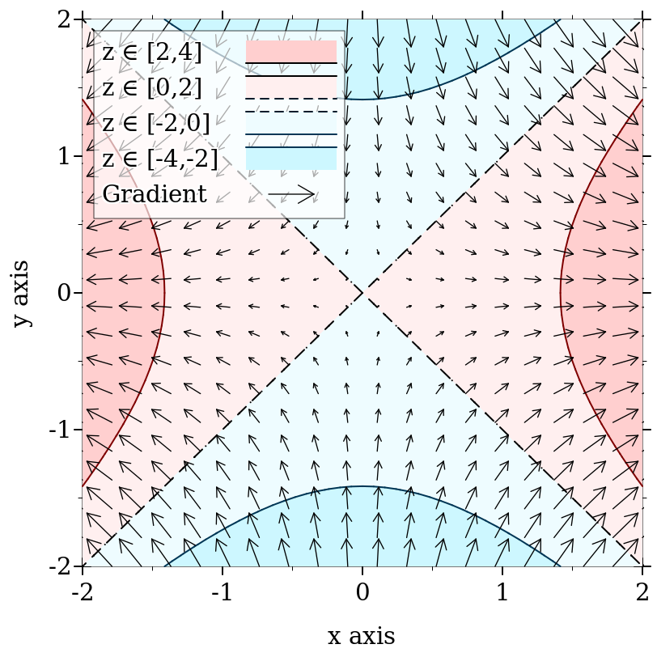
Changed in version 7.9 of package plot-gui-lib: 增加了对 #:label 图片的支持
3.6 二维矩形渲染器
procedure
(rectangles rects [ #:x-min x-min #:x-max x-max #:y-min y-min #:y-max y-max #:color color #:style style #:line-color line-color #:line-width line-width #:line-style line-style #:alpha alpha #:label label]) → renderer2d? rects : (sequence/c (sequence/c #:min-count 2 ivl?)) x-min : (or/c rational? #f) = #f x-max : (or/c rational? #f) = #f y-min : (or/c rational? #f) = #f y-max : (or/c rational? #f) = #f color : plot-color/c = (rectangle-color) style : plot-brush-style/c = (rectangle-style) line-color : plot-color/c = (rectangle-line-color) line-width : (>=/c 0) = (rectangle-line-width) line-style : plot-pen-style/c = (rectangle-line-style) alpha : (real-in 0 1) = (rectangle-alpha) label : (or/c string? pict? #f) = #f
矩形是以一系列间隔序列的形式给出的–每个内部序列定义了一个矩形的边界。 任何一个边界都可以是 -inf.0 或 +inf.0, 在这种情况下,矩形在各自的方向上延伸到绘图区的边缘。
Changed in version 7.9 of package plot-gui-lib: 为 #:label 增加了对图片的支持
procedure
(area-histogram f bin-bounds [ #:x-min x-min #:x-max x-max #:y-min y-min #:y-max y-max #:samples samples #:color color #:style style #:line-color line-color #:line-width line-width #:line-style line-style #:alpha alpha #:label label]) → renderer2d? f : (real? . -> . real?) bin-bounds : (sequence/c real?) x-min : (or/c rational? #f) = #f x-max : (or/c rational? #f) = #f y-min : (or/c rational? #f) = 0 y-max : (or/c rational? #f) = #f samples : (and/c exact-integer? (>=/c 2)) = (line-samples) color : plot-color/c = (rectangle-color) style : plot-brush-style/c = (rectangle-style) line-color : plot-color/c = (rectangle-line-color) line-width : (>=/c 0) = (rectangle-line-width) line-style : plot-pen-style/c = (rectangle-line-style) alpha : (real-in 0 1) = (rectangle-alpha) label : (or/c string? pict? #f) = #f
> (require (only-in plot/utils linear-seq)) > (define (f x) (exp (* -1/2 (sqr x))))
> (plot (list (area-histogram f (linear-seq -4 4 10)) (function f -4 4))) 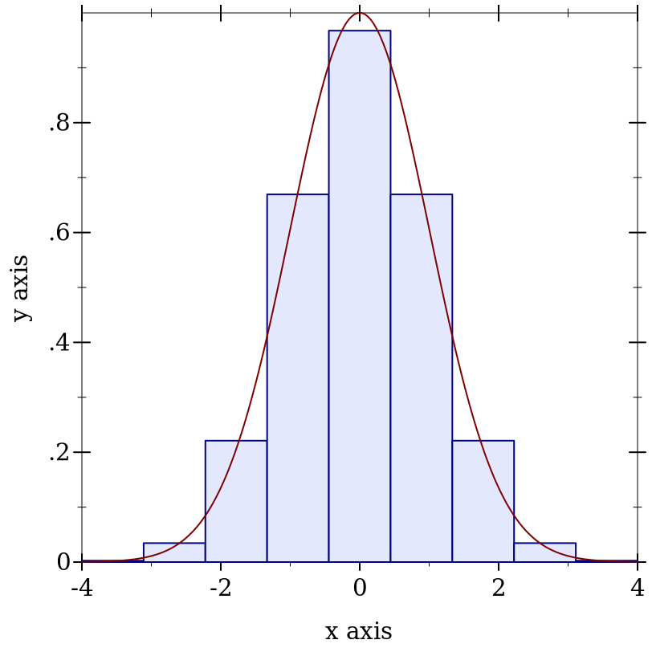
procedure
(discrete-histogram cat-vals [ #:x-min x-min #:x-max x-max #:y-min y-min #:y-max y-max #:gap gap #:skip skip #:invert? invert? #:color color #:style style #:line-color line-color #:line-width line-width #:line-style line-style #:alpha alpha #:label label #:add-ticks? add-ticks? #:far-ticks? far-ticks?]) → renderer2d?
cat-vals :
(sequence/c (or/c (vector/c any/c (or/c real? ivl? #f)) (list/c any/c (or/c real? ivl? #f)))) x-min : (or/c rational? #f) = 0 x-max : (or/c rational? #f) = #f y-min : (or/c rational? #f) = 0 y-max : (or/c rational? #f) = #f gap : (real-in 0 1) = (discrete-histogram-gap) skip : (>=/c 0) = (discrete-histogram-skip) invert? : boolean? = (discrete-histogram-invert?) color : plot-color/c = (rectangle-color) style : plot-brush-style/c = (rectangle-style) line-color : plot-color/c = (rectangle-line-color) line-width : (>=/c 0) = (rectangle-line-width) line-style : plot-pen-style/c = (rectangle-line-style) alpha : (real-in 0 1) = (rectangle-alpha) label : (or/c string? pict? #f) = #f add-ticks? : boolean? = #t far-ticks? : boolean? = #f
> (plot (discrete-histogram (list #(A 1) #(B 2) #(B 3) (vector 'C (ivl 0.5 1.5))))) 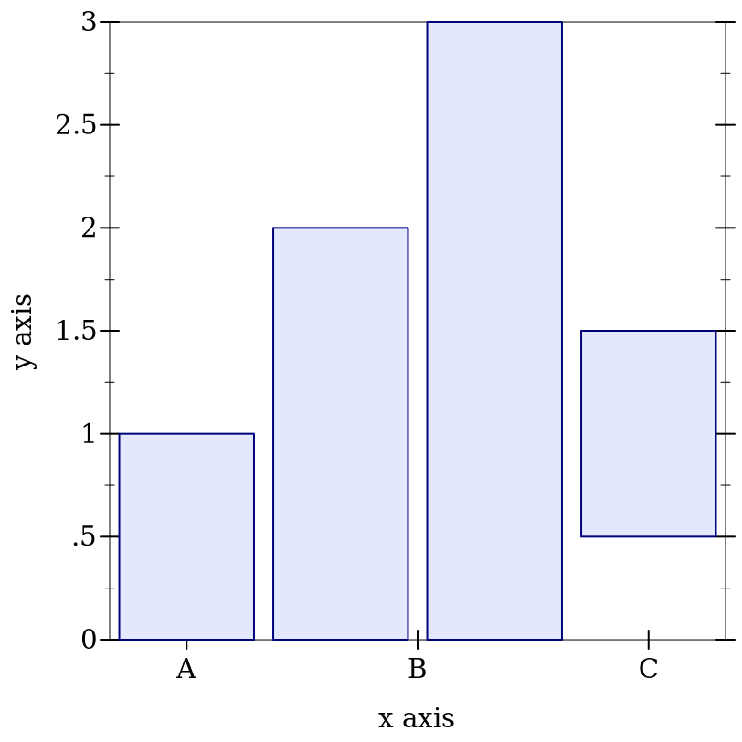
使用 #:invert? #t 来绘制水平条。请看 stacked-histogram 的例子。
每个条形图正好占一个绘图单位,并且每边都有 (* 1/2 gap) 的空位。 第 i 个条形图在 (+ x-min (* i skip)) 处绘制。 因此,第一个条形图 (i = 0) 被绘制在 x-min (默认为 0) 和 (+ x-min 1) 之间的区间。
> (plot (list (discrete-histogram (list #(a 1) #(b 2) #(c 3) #(d 2) #(e 4) #(f 2.5) #(g 1)) #:label "Numbers per letter") (discrete-histogram (list #(1 1) #(4 2) #(3 1.5)) #:x-min 8 #:label "Numbers per number" #:color 2 #:line-color 2))) 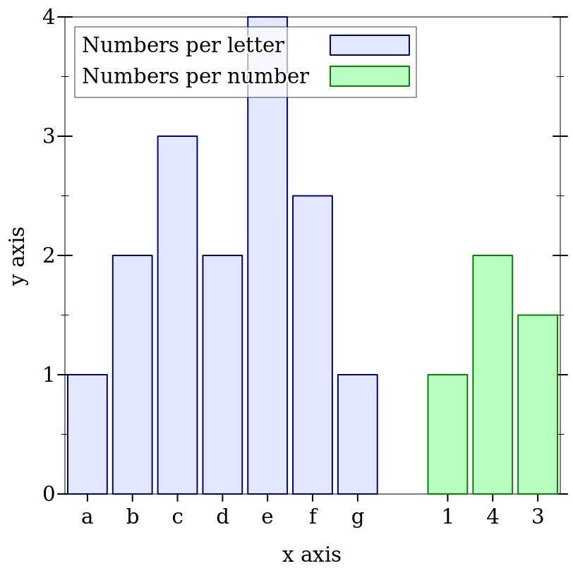
> (plot (list (discrete-histogram '(#(Eggs 1.5) #(Bacon 2.5) #(Pancakes 3.5)) #:skip 2.5 #:x-min 0 #:label "AMD") (discrete-histogram '(#(Eggs 1.4) #(Bacon 2.3) #(Pancakes 3.1)) #:skip 2.5 #:x-min 1 #:label "Intel" #:color 2 #:line-color 2)) #:x-label "Breakfast Food" #:y-label "Cooking Time (minutes)" #:title "Cooking Times For Breakfast Food, Per Processor") 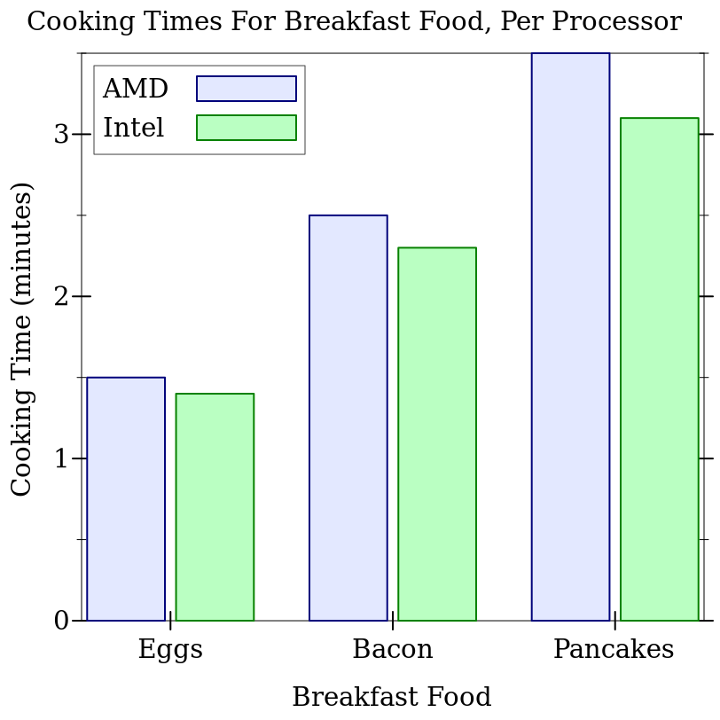
Changed in version 7.9 of package plot-gui-lib: 增加了对 #:label 的图片支持
procedure
(stacked-histogram cat-vals [ #:x-min x-min #:x-max x-max #:y-min y-min #:y-max y-max #:gap gap #:skip skip #:invert? invert? #:colors colors #:styles styles #:line-colors line-colors #:line-widths line-widths #:line-styles line-styles #:alphas alphas #:labels labels #:add-ticks? add-ticks? #:far-ticks? far-ticks?]) → (listof renderer2d?)
cat-vals :
(sequence/c (or/c (vector/c any/c (sequence/c real?)) (list/c any/c (sequence/c real?)))) x-min : (or/c rational? #f) = 0 x-max : (or/c rational? #f) = #f y-min : (or/c rational? #f) = 0 y-max : (or/c rational? #f) = #f gap : (real-in 0 1) = (discrete-histogram-gap) skip : (>=/c 0) = (discrete-histogram-skip) invert? : boolean? = (discrete-histogram-invert?) colors : (plot-colors/c nat/c) = (stacked-histogram-colors)
styles : (plot-brush-styles/c nat/c) = (stacked-histogram-styles)
line-colors : (plot-colors/c nat/c) = (stacked-histogram-line-colors)
line-widths : (pen-widths/c nat/c) = (stacked-histogram-line-widths)
line-styles : (plot-pen-styles/c nat/c) = (stacked-histogram-line-styles) alphas : (alphas/c nat/c) = (stacked-histogram-alphas) labels : (labels/c nat/c) = '(#f) add-ticks? : boolean? = #t far-ticks? : boolean? = #f
> (plot (stacked-histogram (list #(a (1 1 1)) #(b (1.5 3)) #(c ()) #(d (1/2))) #:invert? #t #:labels '("Red" #f "Blue")) #:legend-anchor 'top-right) 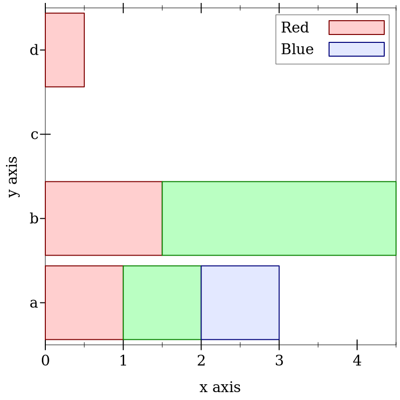
3.7 Violin 和 Box Plot 渲染器
procedure
(violin vs [ #:x x #:width width #:bandwidth bandwidth #:invert? invert? #:label label #:add-ticks? add-ticks? #:far-ticks? far-ticks? #:y-min y-min #:y-max y-max #:samples samples #:color color #:style style #:line-color line1-color #:line-width line1-width #:line-style line1-style #:alpha alpha]) → renderer2d? vs : (sequence/c real?) x : real? = 0 width : (>=/c 0) = 1 bandwidth : (or/c real? #f) = #f invert? : boolean? = #f label : (or/c string? pict? #f) = #f add-ticks? : boolean? = #t far-ticks? : boolean? = #f y-min : (or/c rational? #f) = #f y-max : (or/c rational? #f) = #f samples : (and/c exact-integer? (>=/c 2)) = (line-samples) color : plot-color/c = (interval-color) style : plot-brush-style/c = (interval-style) line1-color : plot-color/c = (interval-line1-color) line1-width : (>=/c 0) = (interval-line1-width) line1-style : plot-pen-style/c = (interval-line1-style) alpha : (real-in 0 1) = (interval-alpha)
默认的内核密度带宽由 silverman-bandwidth 决定。
当 invert? 为 #f 时,小提琴图是垂直绘制的,当它为 #t 时, x 和 y 坐标被倒置,小提琴图是水平绘制的。
label 定义了绘图标签,它是绘图图例以及小提琴图下X轴上显示的数值(如果绘图是倒置的,则是Y轴)。 只有当 add-ticks? 为 #t 时,标签才会显示在 X 轴上, 如果 far-ticks? 为 #t ，则标签会放在远轴上。
y-min 和 y-max 定义了绘制小提琴的垂直范围,默认情况下,会绘制整个 violin 。
samples 定义了函数渲染器在绘制小提琴轮廓时使用的样本数。
其他参数的含义参见 二维渲染器函数参数 。
> (parameterize ([plot-pen-color-map 'tab20] [plot-brush-color-map 'tab20] [plot-x-label #f] [plot-y-label #f]) (define (rnorm sample-count mean stddev) (sample (normal-dist mean stddev) sample-count)) (define a (rnorm 50 10 5)) (define b (append (rnorm 50 13 1) (rnorm 50 18 1))) (define c (rnorm 20 25 4)) (define d (rnorm 10 12 2)) (plot (for/list ([data (list a b c d)] [label (list "a" "b" "c" "d")] [index (in-naturals)]) (violin data #:label label #:invert? #t #:x index #:width 5/4 #:color (+ (* index 2) 1) #:line-color (* index 2))) #:legend-anchor 'no-legend)) 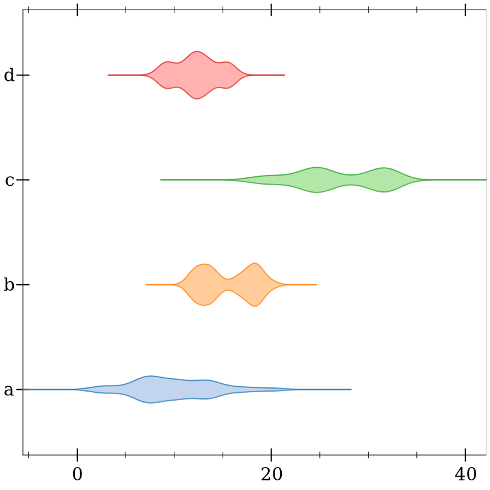
Added in version 8.5 of package plot-gui-lib.
procedure
(box-and-whisker vs [ #:weights ws #:x x #:width width #:iqr-scale iqr-scale #:invert? invert? #:label label #:add-ticks? add-ticks? #:far-ticks? far-ticks? #:box-color box-color #:box-style box-style #:box-line-color box-line-color #:box-line-width box-line-width #:box-line-style box-line-style #:box-alpha box-alpha #:show-outliers? show-outliers? #:outlier-color outlier-color #:outlier-sym outlier-sym #:outlier-fill-color outlier-fill-color #:outlier-size outlier-size #:outlier-line-width outlier-line-width #:outlier-alpha outlier-alpha #:show-whiskers? show-whiskers? #:whisker-color whisker-color #:whisker-width whisker-width #:whisker-style whisker-style #:whisker-alpha whisker-alpha #:show-median? show-median? #:median-color median-color #:median-width median-width #:median-style median-style #:median-alpha median-alpha]) → renderer2d? vs : (sequence/c real?) ws : (sequence/c real?) = #f x : real? = 0 width : (>=/c 0) = 1 iqr-scale : (>=/c 0) = 1.5 invert? : boolean? = #f label : (or/c string? pict? #f) = #f add-ticks? : boolean? = #t far-ticks? : boolean? = #f box-color : plot-color/c = (rectangle-color) box-style : plot-brush-style/c = (rectangle-style) box-line-color : plot-color/c = (rectangle-line-color) box-line-width : (>=/c 0) = (rectangle-line-width) box-line-style : plot-pen-style/c = (rectangle-line-style) box-alpha : (real-in 0 1) = (rectangle-alpha) show-outliers? : boolean? = #t outlier-color : plot-color/c = (point-color) outlier-sym : point-sym/c = (point-sym) outlier-fill-color : (or/c plot-color/c 'auto) = 'auto outlier-size : (>=/c 0) = (point-size) outlier-line-width : (>=/c 0) = (point-line-width) outlier-alpha : (real-in 0 1) = (point-alpha) show-whiskers? : boolean? = #t whisker-color : plot-color/c = (line-color) whisker-width : (>=/c 0) = (line-width) whisker-style : plot-pen-style/c = (line-style) whisker-alpha : (real-in 0 1) = (line-alpha) show-median? : boolean? = #t median-color : plot-color/c = (line-color) median-width : (>=/c 0) = (line-width) median-style : plot-pen-style/c = (line-style) median-alpha : (real-in 0 1) = (line-alpha)
iqr-scale 控制四分位间范围的比例因子,它决定晶须的范围和哪些点被认为是离群值。
当 invert? 为 #f 时,箱形图是垂直绘制的,当它为 #t 时, x和y坐标被倒置,箱形图被水平绘制。
label 定义了绘图标签,它是显示在绘图图例中的数值, 也是显示在箱形图下的X轴上(如果绘图是倒置的,则是Y轴)。 只有当 add-ticks? 为 #t 时,标签才会显示在 X 轴上, 如果 far-ticks? 为 #t ，标签会被放在远轴上。
其他参数的含义参见 二维渲染器函数参数 。
> (parameterize ([plot-pen-color-map 'tab20] [plot-brush-color-map 'tab20] [plot-x-label #f] [plot-y-label #f]) (define (rnorm sample-count mean stddev) (sample (normal-dist mean stddev) sample-count)) (define a (rnorm 50 10 5)) (define b (append (rnorm 50 13 1) (rnorm 50 18 1))) (define c (rnorm 20 25 4)) (define d (rnorm 10 12 2)) (plot (for/list ([data (list a b c d)] [label (list "a" "b" "c" "d")] [index (in-naturals)]) (box-and-whisker data #:label label #:invert? #f #:x index #:width 3/4 #:box-color (+ (* index 2) 1) #:box-line-color (* index 2) #:whisker-color (* index 2) #:median-color "red")) #:legend-anchor 'no-legend)) 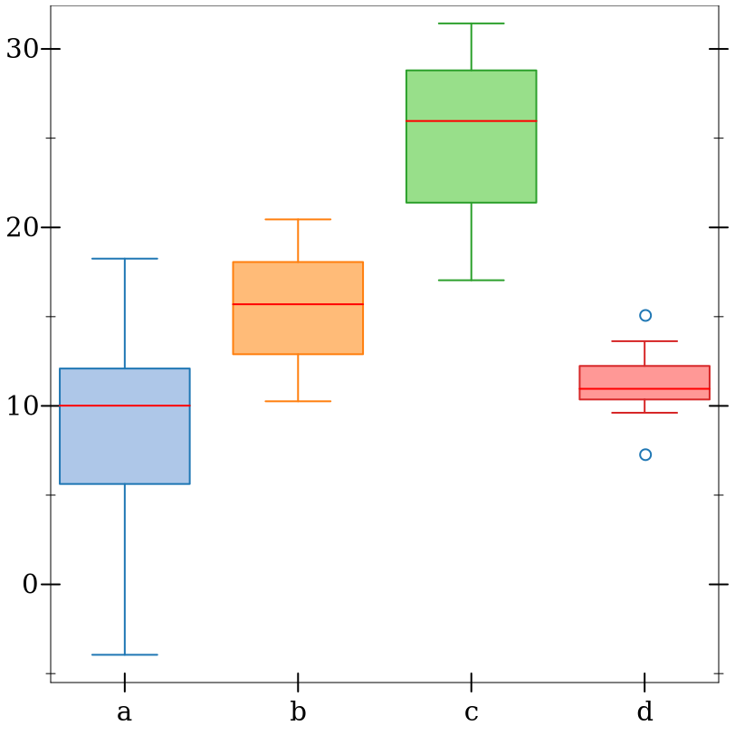
Added in version 8.5 of package plot-gui-lib.
3.8 二维图形装饰渲染器
procedure
(x-axis [ y #:ticks? ticks? #:labels? labels? #:far? far? #:alpha alpha]) → renderer2d? y : real? = 0 ticks? : boolean? = (x-axis-ticks?) labels? : boolean? = (x-axis-labels?) far? : boolean? = (x-axis-far?) alpha : (real-in 0 1) = (x-axis-alpha)
procedure
(y-axis [ x #:ticks? ticks? #:labels? labels? #:far? far? #:alpha alpha]) → renderer2d? x : real? = 0 ticks? : boolean? = (y-axis-ticks?) labels? : boolean? = (y-axis-labels?) far? : boolean? = (y-axis-far?) alpha : (real-in 0 1) = (y-axis-alpha)
procedure
(axes [ x y #:x-ticks? x-ticks? #:y-ticks? y-ticks? #:x-labels? x-labels? #:y-labels? y-labels? #:x-alpha x-alpha #:y-alpha y-alpha]) → (listof renderer2d?) x : real? = 0 y : real? = 0 x-ticks? : boolean? = (x-axis-ticks?) y-ticks? : boolean? = (y-axis-ticks?) x-labels? : boolean? = (x-axis-labels?) y-labels? : boolean? = (y-axis-labels?) x-alpha : (real-in 0 1) = (x-axis-alpha) y-alpha : (real-in 0 1) = (y-axis-alpha)
procedure
(polar-axes [ #:number num #:ticks? ticks? #:labels? labels? #:alpha alpha]) → renderer2d? num : exact-nonnegative-integer? = (polar-axes-number) ticks? : boolean? = (polar-axes-ticks?) labels? : boolean? = (polar-axes-labels?) alpha : (real-in 0 1) = (polar-axes-alpha)
procedure
procedure
procedure
(tick-grid) → (listof renderer2d?)
procedure
(point-label v [ label #:color color #:size size #:face face #:family family #:anchor anchor #:angle angle #:point-color point-color #:point-fill-color point-fill-color #:point-size point-size #:point-line-width point-line-width #:point-sym point-sym #:alpha alpha]) → renderer2d? v : (sequence/c real?) label : (or/c string? #f) = #f color : plot-color/c = (plot-foreground) size : (>=/c 0) = (plot-font-size) face : (or/c string? #f) = (plot-font-face) family : font-family/c = (plot-font-family) anchor : anchor/c = (label-anchor) angle : real? = (label-angle) point-color : plot-color/c = (point-color) point-fill-color : (or/c plot-color/c 'auto) = 'auto point-size : (>=/c 0) = (label-point-size) point-line-width : (>=/c 0) = (point-line-width) point-sym : point-sym/c = 'fullcircle alpha : (real-in 0 1) = (label-alpha)
> (plot (list (function sqr 0 2) (point-label (vector 1 1)))) 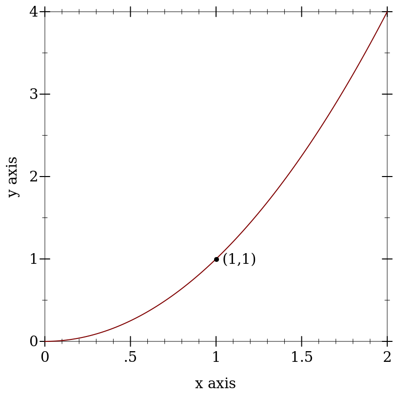
其他的标注点函数都是根据这个函数来定义的。
procedure
(point-pict v pict [ #:anchor anchor #:point-color point-color #:point-fill-color point-fill-color #:point-size point-size #:point-line-width point-line-width #:point-sym point-sym #:alpha alpha]) → renderer2d? v : (sequence/c real?) pict : pict? anchor : anchor/c = (label-anchor) point-color : plot-color/c = (point-color) point-fill-color : (or/c plot-color/c 'auto) = 'auto point-size : (>=/c 0) = (label-point-size) point-line-width : (>=/c 0) = (point-line-width) point-sym : point-sym/c = 'fullcircle alpha : (real-in 0 1) = (label-alpha)
> (require pict)
> (plot (list (function sqr 0 2) (point-pict (vector 1 1) (standard-fish 40 15)))) 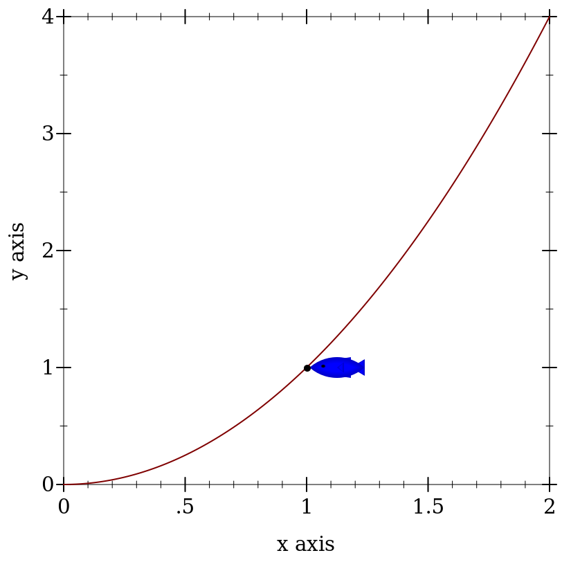
其余的 labeled-pict 函数都是根据这个函数定义的。
procedure
(function-label f x [ label #:color color #:size size #:face face #:family family #:anchor anchor #:angle angle #:point-color point-color #:point-fill-color point-fill-color #:point-size point-size #:point-line-width point-line-width #:point-sym point-sym #:alpha alpha]) → renderer2d? f : (real? . -> . real?) x : real? label : (or/c string? #f) = #f color : plot-color/c = (plot-foreground) size : (>=/c 0) = (plot-font-size) face : (or/c string? #f) = (plot-font-face) family : font-family/c = (plot-font-family) anchor : anchor/c = (label-anchor) angle : real? = (label-angle) point-color : plot-color/c = (point-color) point-fill-color : (or/c plot-color/c 'auto) = 'auto point-size : (>=/c 0) = (label-point-size) point-line-width : (>=/c 0) = (point-line-width) point-sym : point-sym/c = 'fullcircle alpha : (real-in 0 1) = (label-alpha)
> (plot (list (function sin (- pi) pi) (function-label sin (* 1/6 pi) "(1/6 π, 1/2)" #:anchor 'right)))

procedure
(function-pict f x pict [ #:anchor anchor #:point-color point-color #:point-fill-color point-fill-color #:point-size point-size #:point-line-width point-line-width #:point-sym point-sym #:alpha alpha]) → renderer2d? f : (real? . -> . real?) x : real? pict : pict? anchor : anchor/c = (label-anchor) point-color : plot-color/c = (point-color) point-fill-color : (or/c plot-color/c 'auto) = 'auto point-size : (>=/c 0) = (label-point-size) point-line-width : (>=/c 0) = (point-line-width) point-sym : point-sym/c = 'fullcircle alpha : (real-in 0 1) = (label-alpha)
procedure
(inverse-label f y [ label #:color color #:size size #:face face #:family family #:anchor anchor #:angle angle #:point-color point-color #:point-fill-color point-fill-color #:point-size point-size #:point-line-width point-line-width #:point-sym point-sym #:alpha alpha]) → renderer2d? f : (real? . -> . real?) y : real? label : (or/c string? #f) = #f color : plot-color/c = (plot-foreground) size : (>=/c 0) = (plot-font-size) face : (or/c string? #f) = (plot-font-face) family : font-family/c = (plot-font-family) anchor : anchor/c = (label-anchor) angle : real? = (label-angle) point-color : plot-color/c = (point-color) point-fill-color : (or/c plot-color/c 'auto) = 'auto point-size : (>=/c 0) = (label-point-size) point-line-width : (>=/c 0) = (point-line-width) point-sym : point-sym/c = 'fullcircle alpha : (real-in 0 1) = (label-alpha)
procedure
(inverse-pict f y pict [ #:anchor anchor #:point-color point-color #:point-fill-color point-fill-color #:point-size point-size #:point-line-width point-line-width #:point-sym point-sym #:alpha alpha]) → renderer2d? f : (real? . -> . real?) y : real? pict : pict? anchor : anchor/c = (label-anchor) point-color : plot-color/c = (point-color) point-fill-color : (or/c plot-color/c 'auto) = 'auto point-size : (>=/c 0) = (label-point-size) point-line-width : (>=/c 0) = (point-line-width) point-sym : point-sym/c = 'fullcircle alpha : (real-in 0 1) = (label-alpha)
procedure
(parametric-label f t [ label #:color color #:size size #:face face #:family family #:anchor anchor #:angle angle #:point-color point-color #:point-fill-color point-fill-color #:point-size point-size #:point-line-width point-line-width #:point-sym point-sym #:alpha alpha]) → renderer2d? f : (real? . -> . (sequence/c real?)) t : real? label : (or/c string? #f) = #f color : plot-color/c = (plot-foreground) size : (>=/c 0) = (plot-font-size) face : (or/c string? #f) = (plot-font-face) family : font-family/c = (plot-font-family) anchor : anchor/c = (label-anchor) angle : real? = (label-angle) point-color : plot-color/c = (point-color) point-fill-color : (or/c plot-color/c 'auto) = 'auto point-size : (>=/c 0) = (label-point-size) point-line-width : (>=/c 0) = (point-line-width) point-sym : point-sym/c = 'fullcircle alpha : (real-in 0 1) = (label-alpha)
procedure
(parametric-pict f t pict [ #:anchor anchor #:point-color point-color #:point-fill-color point-fill-color #:point-size point-size #:point-line-width point-line-width #:point-sym point-sym #:alpha alpha]) → renderer2d? f : (real? . -> . (sequence/c real?)) t : real? pict : pict? anchor : anchor/c = (label-anchor) point-color : plot-color/c = (point-color) point-fill-color : (or/c plot-color/c 'auto) = 'auto point-size : (>=/c 0) = (label-point-size) point-line-width : (>=/c 0) = (point-line-width) point-sym : point-sym/c = 'fullcircle alpha : (real-in 0 1) = (label-alpha)
procedure
(polar-label f θ [ label #:color color #:size size #:face face #:family family #:anchor anchor #:angle angle #:point-color point-color #:point-fill-color point-fill-color #:point-size point-size #:point-line-width point-line-width #:point-sym point-sym #:alpha alpha]) → renderer2d? f : (real? . -> . real?) θ : real? label : (or/c string? #f) = #f color : plot-color/c = (plot-foreground) size : (>=/c 0) = (plot-font-size) face : (or/c string? #f) = (plot-font-face) family : font-family/c = (plot-font-family) anchor : anchor/c = (label-anchor) angle : real? = (label-angle) point-color : plot-color/c = (point-color) point-fill-color : (or/c plot-color/c 'auto) = 'auto point-size : (>=/c 0) = (label-point-size) point-line-width : (>=/c 0) = (point-line-width) point-sym : point-sym/c = 'fullcircle alpha : (real-in 0 1) = (label-alpha)
procedure
(polar-pict f θ pict [ #:anchor anchor #:point-color point-color #:point-fill-color point-fill-color #:point-size point-size #:point-line-width point-line-width #:point-sym point-sym #:alpha alpha]) → renderer2d? f : (real? . -> . real?) θ : real? pict : pict? anchor : anchor/c = (label-anchor) point-color : plot-color/c = (point-color) point-fill-color : (or/c plot-color/c 'auto) = 'auto point-size : (>=/c 0) = (label-point-size) point-line-width : (>=/c 0) = (point-line-width) point-sym : point-sym/c = 'fullcircle alpha : (real-in 0 1) = (label-alpha)
3.9 二维绘图的交互式叠加器
| (require plot/snip) | package: plot-gui-lib |
plot-snip 返回的 snip% 对象可以被设置为提供交互式叠加。 例如,该功能可用于在鼠标光标处显示绘图函数的当前值。
如果在 DrRacket 中对下面的代码进行评估,得到的绘图将显示一条跟踪鼠标的垂直线,并在标签上显示当前绘图位置。 这是通过在 plot-snip 返回的 plot snip 中添加鼠标回调实现的。 当鼠标回调被调用时,它将在当前的 X 位置添加一个 vrule , 在绘图函数的当前值添加一个 point-label 。
(require plot) (define snip (plot-snip (function sin) #:x-min -5 #:x-max 5)) (define (mouse-callback snip event x y) (if (and x y) (send snip set-overlay-renderers (list (vrule x) (point-label (vector x (sin x))))) (send snip set-overlay-renderers #f))) (send snip set-mouse-event-callback mouse-callback) snip
这里有一些提示,用于在 racket 绘图中添加常见的交互元素:
rectangles 渲染器可以用来突出绘图上的某个区域。 例如,要突出显示 xmin 和 xmax 之间的一个垂直区域,可以使用:
(rectangles (list (vector (ivl xmin xmax) (ivl -inf.0 +inf.0))) #:alpha 0.2) point-label 渲染器可以用来在绘图中添加一个带有字符串标签的点。 要想只添加标签,请使用 'none 作为 #:point-sym 参数的值。
point-pict 呈现器可以用来添加一个带有 pict 而不是字符串标签的点。 这可以用来绘制花哨的标签(例如圆角的),或者任何其他类型的图形元素。
points 渲染器可以用来标记绘图上的特定位置,而不需要为它们指定一个标签。
|
superclass: snip% |
method
(send a-2d-plot-snip set-mouse-event-callback callback) → any/c
callback : (or/c plot-mouse-event-callback/c #f) 设置一个回调函数,用于调用来自狙击点的鼠标事件。 调用回调函数时,会用到实际的狙击对象、 mouse-event% 以及鼠标在绘图坐标中的 X、Y 位置(即绘图中渲染器使用的坐标系统)。 当鼠标在绘图区域外时(例如,当鼠标在轴区上时),X 和 Y 值是 #f 。当安装了回调后,默认的绘图剪裁的缩放功能被禁用。 这可以通过调用带有 #f 参数的 set-mouse-event-callback 来恢复。
method
(send a-2d-plot-snip set-overlay-renderers renderers) → any/c
renderers : (or/c (treeof renderer2d?) #f) 设置一个渲染器集合,将其绘制在现有地块之上。 这可以是任何二维渲染器的组合,但它不能修改坐标轴或绘图区域的尺寸。 只能安装一组叠加渲染器;第二次调用此方法将替换之前的叠加渲染器。 指定 #f 作为渲染器将导致覆盖被禁用。